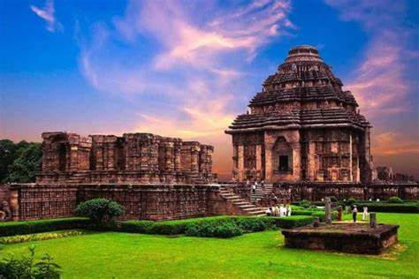

Konark Sun Temple

Religion: Hinduism
District: Puri
Deity: Surya (Sun)
Festival: Chandrabhaga Melan
Governing body: ASI
Location: Konark, Puri district, Odisha, India
State: Odisha
Country: India
Geographic coordinates: 19°53′15″N 86°5′41″E
Architecture Style: Kalinga
Creator: Narasingha Deva I
Completed: c. 1250
Site area: 10.62 ha (26.2 acres)
Website: konark.nic.in
UNESCO World Heritage Site:
Location: Konark, Odisha, India
Criteria: Cultural: (i)(iii)(vi)
Reference: 246
Inscription: 1984